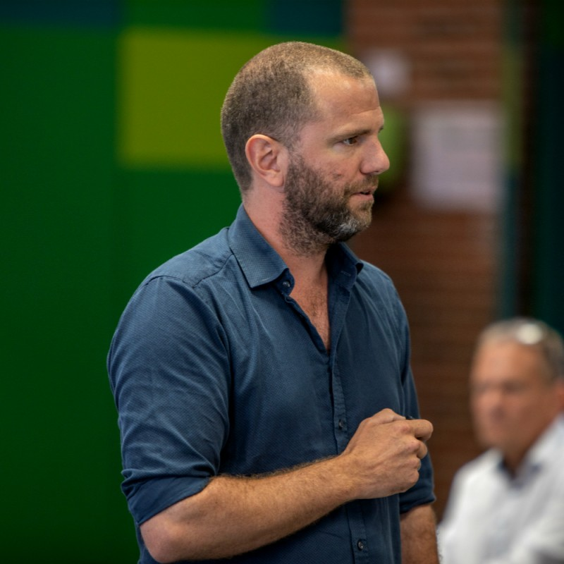

Strategiskskole.dk er kendetegnet ved at arbejde i spændingsfeltet mellem drift og udvikling. Vi tør adressere det, der er svært — ledelsesrum, konflikter, uklarhed — og vi kobler altid strategi direkte til praksis.
Strategiskskole.dk er ikke en klassisk konsulentvirksomhed. Den er kendt for at arbejde i spændingsfeltet mellem drift og udvikling, skabe retning i kompleksitet, turde adressere det der er svært, og koble strategi direkte til praksis.
Tilgangen er: praksisnær, relationel, analytisk skarp, konfronterende på en konstruktiv måde.
Vi arbejder ud fra seks helt centrale principper, som præger alt det, vi gør:
Vi måler altid på, om indsatsen gør en forskel i hverdagen.
Vi hjælper med at skabe klarhed over, hvad der prioriteres — og hvad der ikke gør.
Vi designer altid med øje for, hvad organisationen realistisk kan bære.
Gode intentioner er ikke nok. Vi arbejder med de konkrete greb, der ændrer adfærd.
Klar organisering er ikke bureaukrati. Det er omsorg for medarbejderne.
Vi hjælper med at skabe de rammer, samarbejdet kan leve i.

Thomas Kjerstein er grundlæggeren af Strategiskskole.dk og arbejder som strategisk medudvikler, konsulent og sparringspartner for skoleledelser og bestyrelser i frie skoler.
Med udgangspunkt i årelangs erfaring med skoleudvikling kombinerer Thomas analytisk skarphed med et dybt kendskab til skolens virkelighed. Han er kendt for at stille de spørgsmål, der skaber bevægelse — og for altid at koble strategi til konkret hverdagspraksis.
Kontakt: thomas@strategiskskole.dk · 61 65 73 65